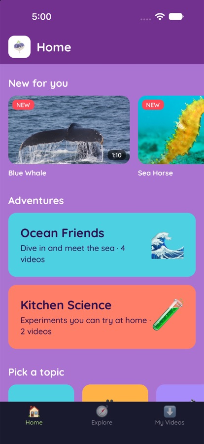
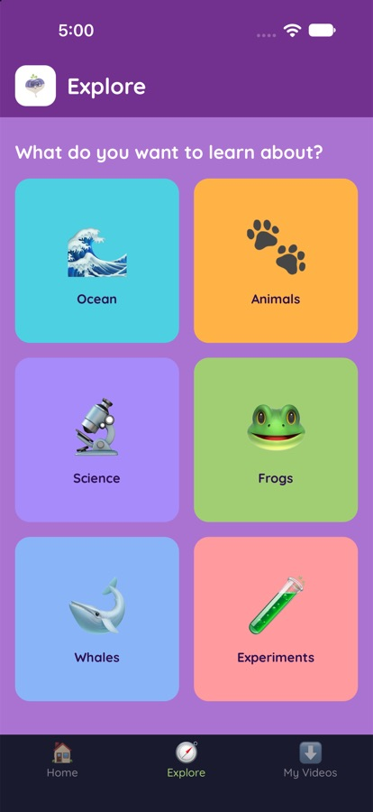
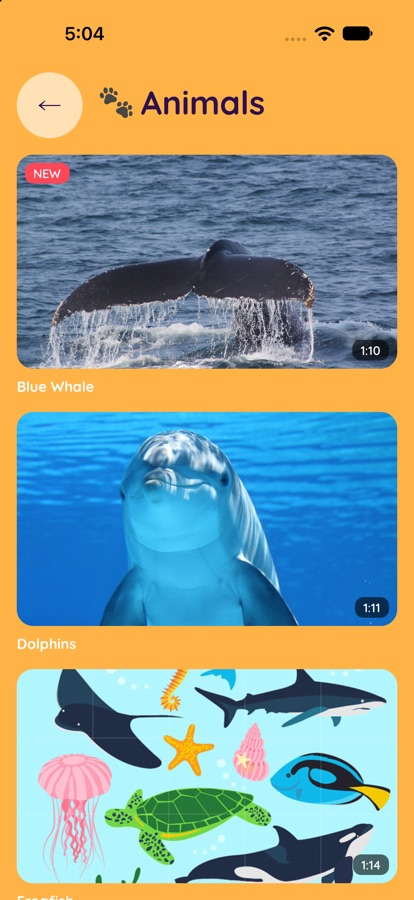
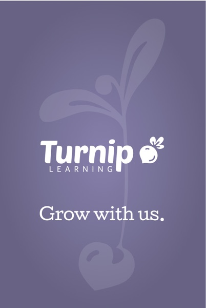
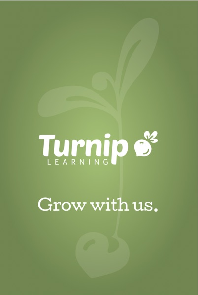
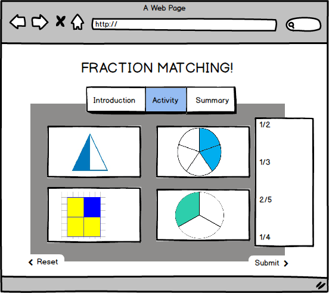
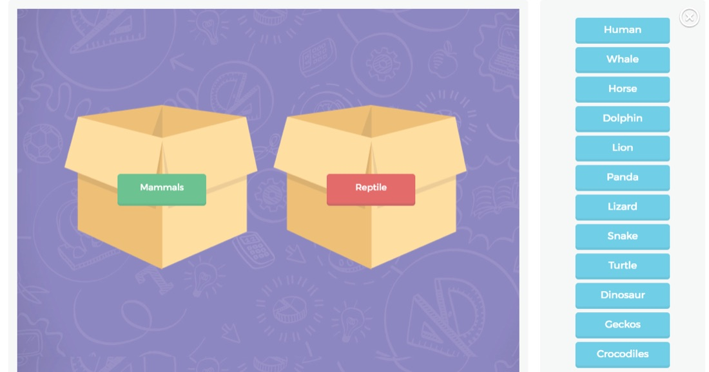
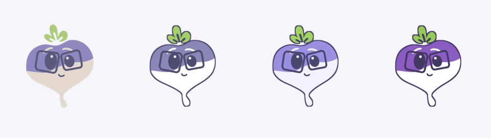

Can't read yet?
Every topic is a picture you can tap. Big buttons, a giant Play and a giant Go Home, so a preschooler can find their way without help.
For curious kids, ages 3 to 9
The safe video world for kids: like YouTube, but built for learning, not engagement.
In development. A family pilot on TestFlight comes next.
Who it's for
Every topic is a picture you can tap. Big buttons, a giant Play and a giant Go Home, so a preschooler can find their way without help.
Short videos strung into adventures, like Ocean Friends or Kitchen Science. When one ends, the next stays on the same topic instead of drifting into a feed.
No ads, no tracking and no algorithm. Settings sit behind a parent gate, kids' profiles are just a nickname and an avatar, and downloads cover the car ride.



Screens from the current build. The v2 design is on the way.
The origin
I'm Sarah Ritter. I've spent most of my life as a riding instructor and a Pony Club and 4-H coach.
I taught kids as young as four the parts of a pony: nose, tail, eyes, ears. I took high schoolers to national competitions where they had to identify bones, ligaments and teeth. I wanted an app that made that learning interactive.
Then I noticed my brother, a special education teacher, and my sister-in-law, a 3rd-grade teacher, needed the same pattern for entirely different topics, like the parts of a flower.
Abstract the interaction, not the content.
That was the product insight. Build templates that teachers can fill with their own material.


2015–2017
Schools were buying a tablet or laptop for every student, but the content hadn't caught up.


I interviewed and observed teachers through New Hanover County schools and Watson College of Education events, then surveyed 48 of them.
Personas, user stories and paper prototypes followed, with goals like "a teacher creates an app in under five days" and "a teacher checks out another teacher's course in under two minutes." The Lean Canvas changed every time a guess was proven right or wrong. When surveys showed overlapping vocabulary needs, for example, the audience widened to foreign-language teachers.
I incorporated Turnip Learning Inc. and joined the UNCW Center for Innovation and Entrepreneurship. A volunteer team of designers, developers and an intern, with advisors from UNCW's computer science and education faculties, produced a business plan, pitch decks, marketing materials and a working web app. We planned alpha and beta releases with Watson College's network of more than 2,000 P–12 teachers.
Ten years of versions
Every version was something real people could touch and react to. The tools changed dramatically. The habit of building, testing with users and iterating didn't.
2015–2017 · Thesis and startup
Teacher login, a course builder, an image-labeling activity and a Postgres data model.
Paper prototypes, Balsamiq, Vertabelo and DBSchema, a DreamFactory REST API, Bootstrap and React, hosted on AWS
Learned Customer discovery, Lean Startup, leading a team, data modeling, and choosing (and mis-choosing) a framework
After grad school · Agency work
A very similar content platform, delivered to USA Swimming.
A professional agency team
Learned Shipping the pattern for a real client at scale
Years ago · Native mobile
Turnip moved from the browser to a native app.
Self-taught: built, compiled and deployed it myself
Learned Mobile build pipelines, native tooling and App Store realities
March 2026 · AI rebuild #1
A new iPad app with eight sample videos, built with Claude inside VS Code.
Claude in VS Code, React Native
Learned How fast a product manager can move when AI handles the boilerplate
2026 · The current design
An iPad kids app with a splash screen, sign-in, a profile picker, browsing by shows and episodes, a video player and a full design system.
AI design-to-code in Magic Patterns, plus Claude. React, TypeScript, Vite, Chakra UI
Learned Designing in a system first, and directing AI as a build partner
Fall 2026 · AI rebuild #2
Claude reviewed the old code with me and we wrote the plan down first. The previous build had spent weeks stuck on an unused library. The rebuild was a working app for iPhone and iPad in a day, with videos moving to a real streaming service.
Claude, Expo and React Native, Mux video streaming, Supabase planned for accounts and data
Learned When to rebuild instead of refactor, and why writing decisions down matters
Next
The new Turnip Learning brand, parent accounts, offline downloads for car trips, and a TestFlight pilot with families at home.
Claude
Goal Turning a prototype into a maintainable product
Where the idea is today
Ten years later, the core belief is the same: kids learn best from short, great content followed by a chance to practice.
The shift was personal. Doing virtual school with my daughter, I found myself assigning YouTube videos from creators I loved, like Jack Hartmann, Danny Go and Emily's Wonder Lab, and watching random ads play between them. YouTube is built for engagement, not for kids, and parents feel guilty every time they tap play.
So Turnip now starts with a parent sign-in and a friendly profile picker. Kids browse shows and episodes, watch in a kid-sized player with big, simple controls, and play games that keep the original Turnip idea alive: watch a clip, then check what you understood.
October 2026
A child tester in the target age range called the current look "too babyish." That's fair. So v2 grows up a little without losing the fun.

Each world is a bold color kids learn to recognize, and each holds about a dozen topics.
Forests and jungles, deserts, rivers and lakes, weather and seasons
Mammals, birds, reptiles, insects, animal homes, food chains
Volcanoes, earthquakes, rocks and minerals, the Moon and stars, fossils
Cells, the human body, life cycles, senses and the brain, photosynthesis
Building with Claude
The value of the old app was its idea and its design. Its foundation was the problem, so we started over and kept the parts that worked.
Along the way
Problem discovery, survey design, personas, user stories, MVP definition, Lean Canvas, competitive analysis, pricing, roadmaps and pitching
Paper prototypes, wireframes, usability walkthroughs with teachers, and building and keeping a design system
React, React Native, Xcode builds, REST APIs, Postgres and JSON data modeling, AWS hosting and deployment
Running a volunteer team, choosing between Scrum and Kanban, owning stack decisions, and working with advisors and an incubator
Using Claude and design-to-code tools to shrink the idea, prototype and test loop, and knowing when to refactor what the AI produced
Safe by design
Turnip follows Apple's rules for kids' apps and the children's privacy law updated in 2025. There are no ads, no third-party trackers and no open-ended recommendations.
A child's profile holds a nickname, an avatar and an age band. That's all. Grown-up settings, outside links and purchases sit behind a parent gate.
The goal is a screen you don't have to hover over.
In development. A family pilot on TestFlight comes next.